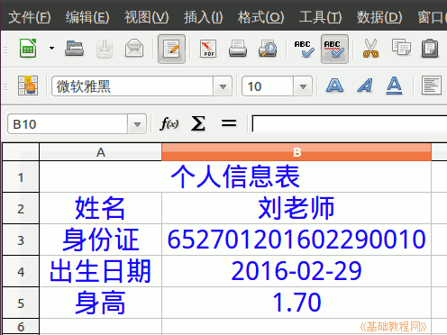

2015-2016 第一学期七年级电子表格和音视频编辑教学设计
作者：TeliuTe 来源：基础教程网
二、 返回目录 下一课
（一）教学设计
1、学习目标：
2、注意事项：绕过弯来，既不要跳也不要落，一楼过了二楼
3、教学过程：
1）教师准备学案和板书；
2）学生整队进入，开机抄黑板上笔记；
3）教师讲解板书演示操作；
4）学生打指法、日志、完成操作；
5）教师打勾记录学生指法成绩，检查日志和操作；
注：学生抄完笔记就开始打指法、日志，老师讲完后再继续完成；
操作图示：

（二）板书设计(学生笔记)、课后记
02学会数据类型
1.点菜单“格式，单元格”
2.类别有数字，日期，文字
3.数字保留两位小数
4.日期用横杠，身份证号用文字
第2课 学会数据类型
1.点菜单“格式，单元格”
2.类别有数字，日期，文字
3.数字保留两位小数
4.日期用横杠，身份证号用文字
--
2016年02月29日 星期一 13:34
--
把中文的三个要求扫一眼再说一下
电铃没响，学生来晚了
--
多鼓励少批评，老是返工的还是训了
双击必须要反复练习，瞄准了再点
--
多讲解操作习惯，从上到下，从左到右
快的太快，慢的还要多练
--
别着急，一步一步都做对了就好
以为是八年级的flash，辛苦弄好，七年级的来了
--
把之前的调出来，当时写好
表格用纵向的，跟上节课的样式一样
--
跟户口本上是一样的，个人信息表
养成分类的好习惯，文字、数字、日期
--
先准备好格子，格式菜单要记牢
这节课就是格式菜单，还有按回车键也是
--
4班的中文指法很慢，女生还有10几分20多分的
让打词语，都还是全拼打英文的架势一个字母一个字母往外蹦的
--
返回目录 下一课
本教程由86团学校TeliuTe制作|著作权所有
基础教程网：http://teliute.org/
美丽的校园……
转载和引用本站内容，请保留作者和本站链接。